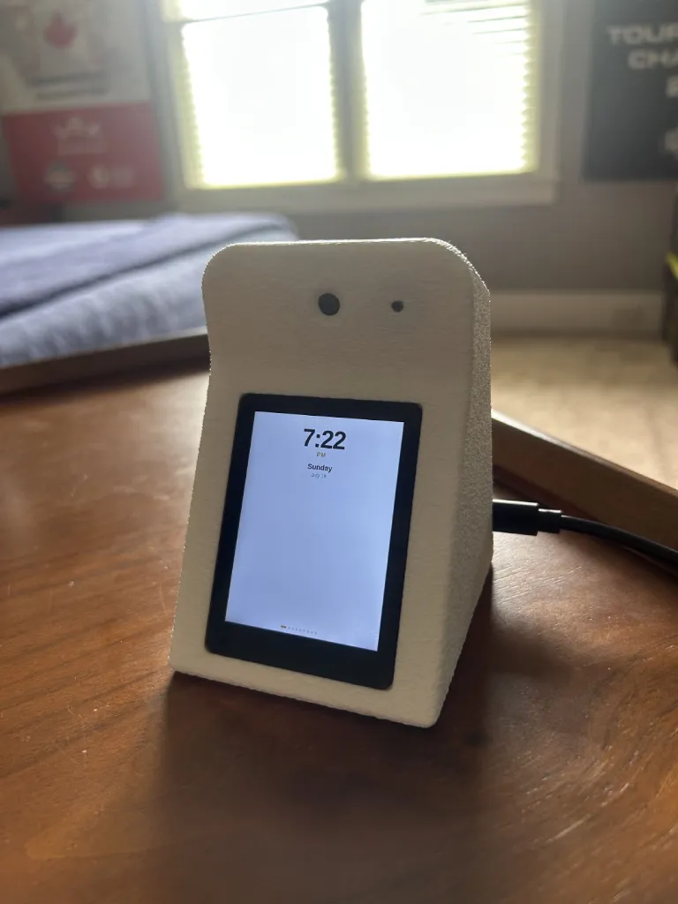
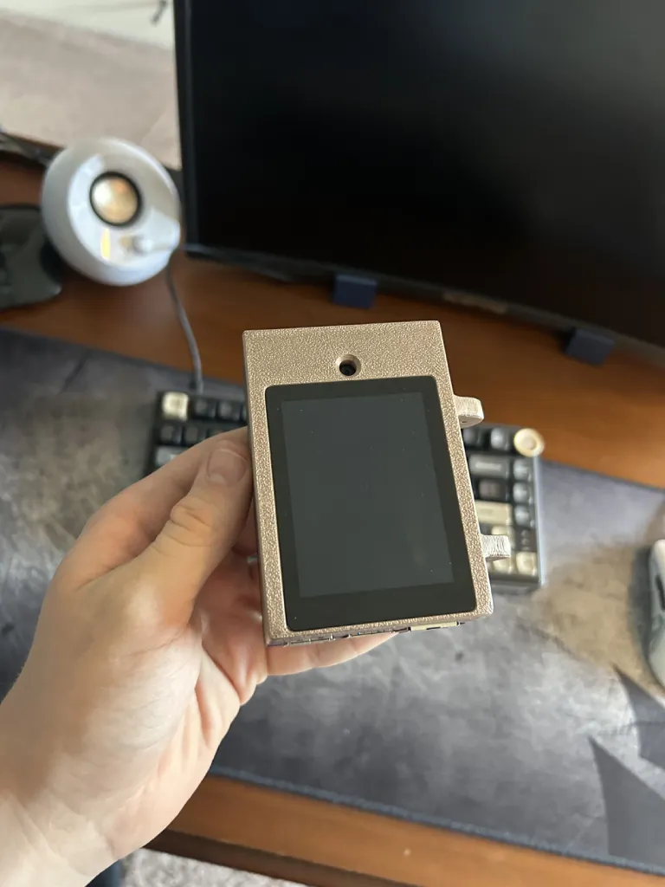
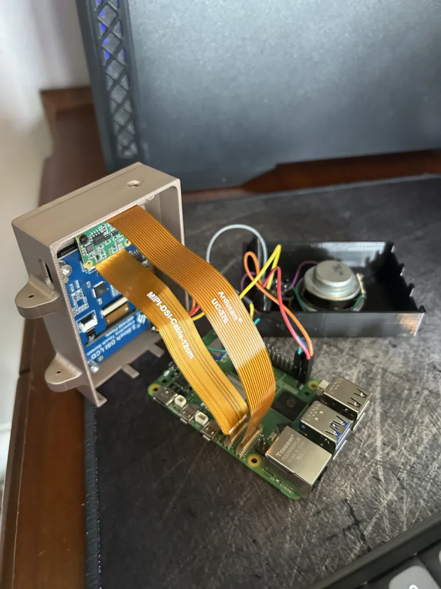
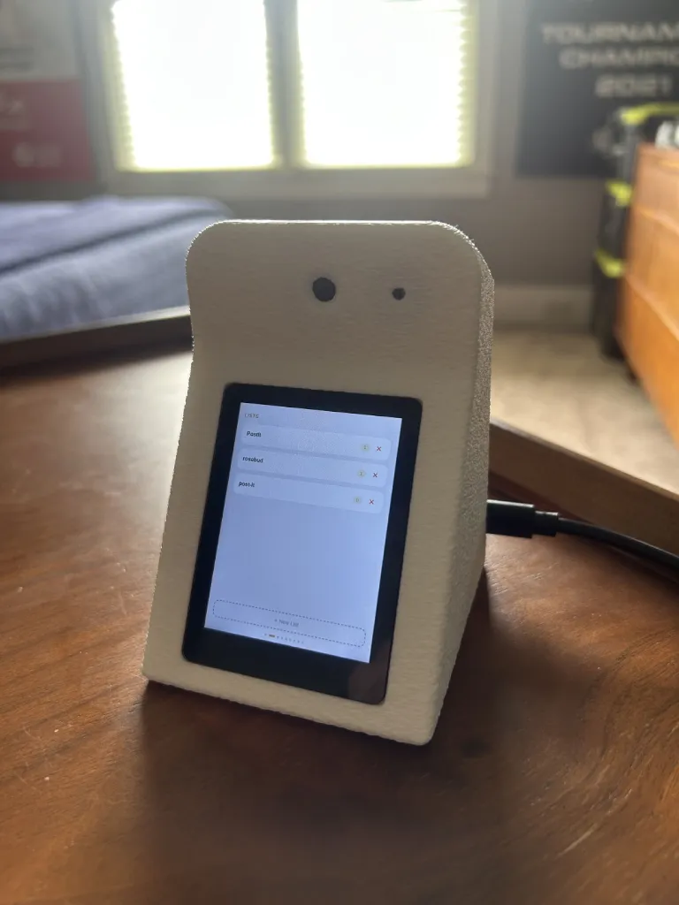
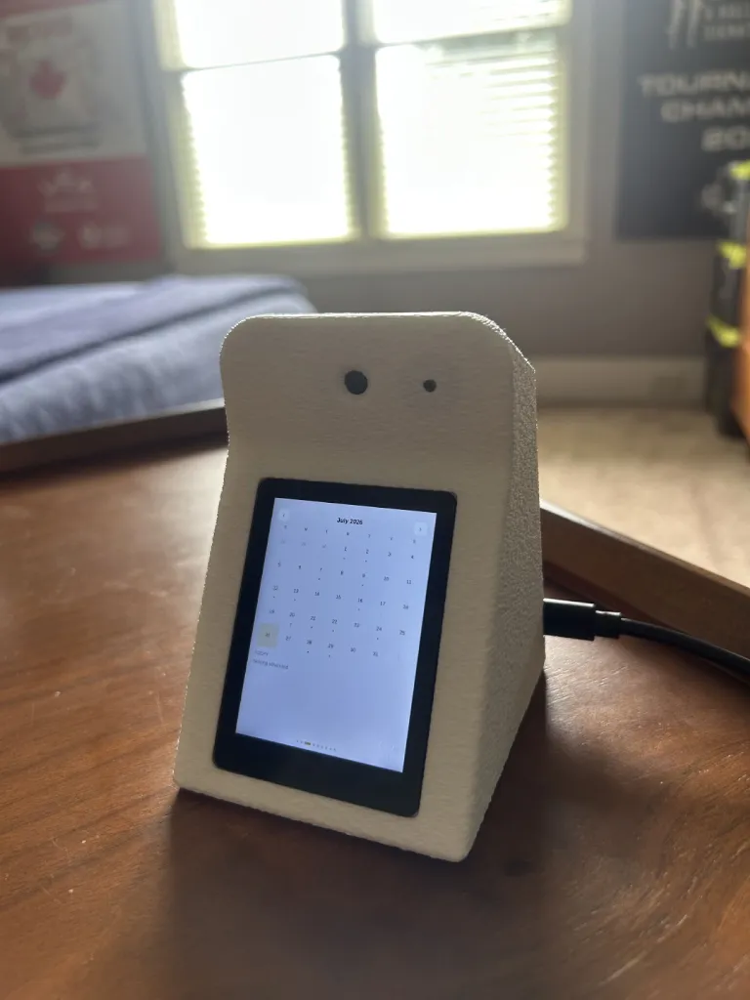
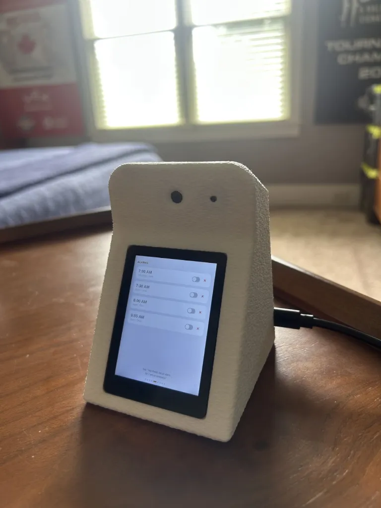
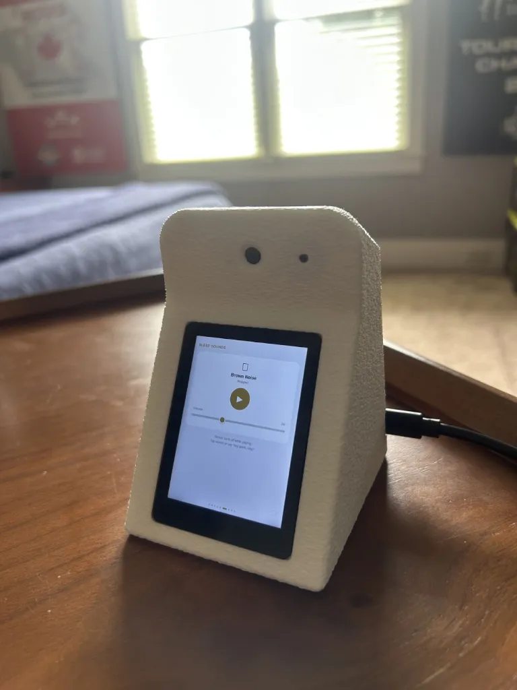
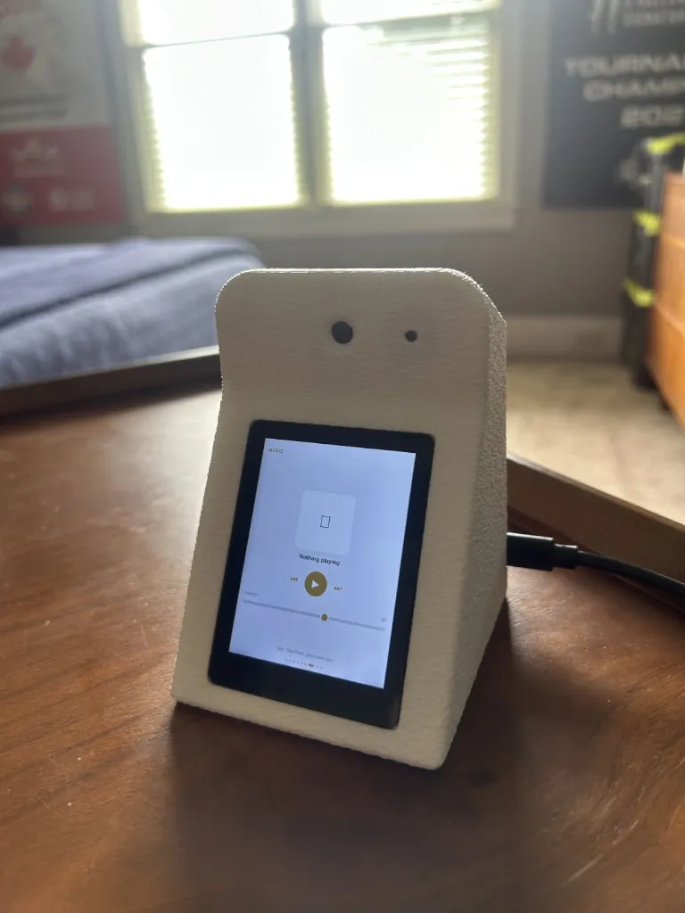
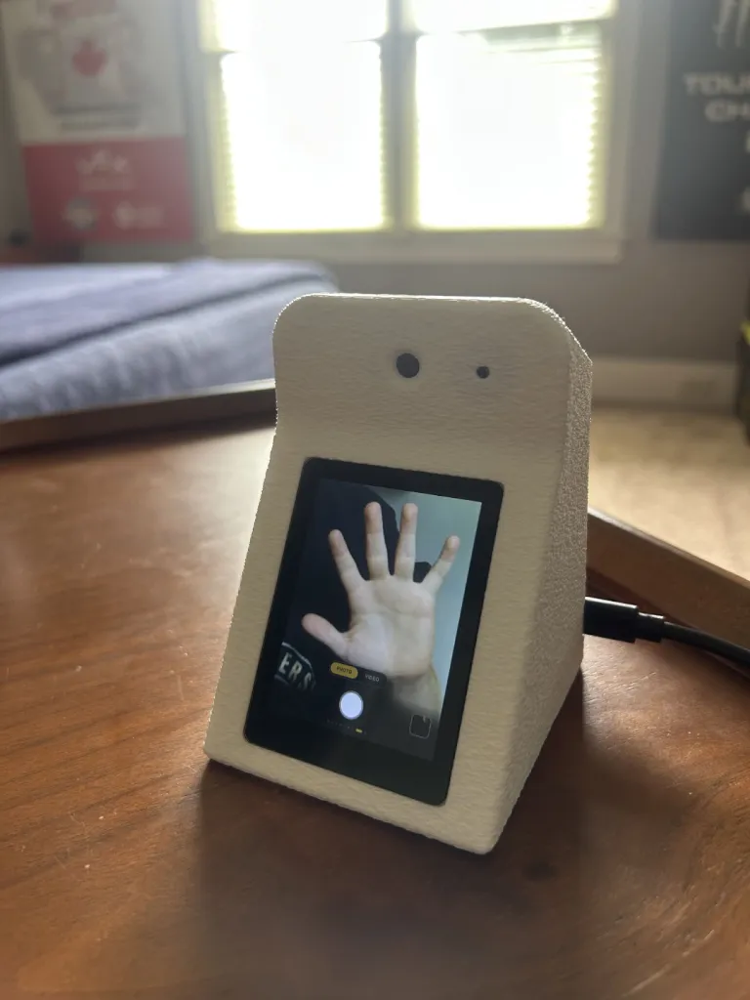

Personal · In daily use
PostIt Voice Assistant
A desk assistant built on a Raspberry Pi 5 with a custom wake word, local speech recognition, a touch UI I designed screen by screen, and enough integrations that I actually use it instead of my phone.
- Compute
- Raspberry Pi 5
- Display
- 2.8″ DSI touch
- Audio
- I2S mic + amp
- Wake word
- Custom-trained
hey_postit - Speech
- faster-whisper base.en
- Response
- ~0.6 s cached ·
5–9 s cold - Enclosure
- Printed, two revisions
- Status
- In daily use
What it is
I wanted a thing on my desk that I could talk to without handing my voice to somebody else's cloud microphone, that ran the parts of my life that live in a calendar and a list, and that I had built myself. PostIt is that. It listens for its own name, transcribes locally, answers, and drives a touchscreen with nine screens I laid out one at a time.
It is also the software half of the balancing robot on sheet 02. The assistant came first and the body came second, which is a nicer order than it sounds: by the time the robot needed a voice, the voice had already been in service for months.

The pipeline
Every turn of conversation runs the same chain, and each stage was chosen and then tuned against a stopwatch.
| Stage | What runs | Tuning that mattered |
|---|---|---|
| Wake | openWakeWord, custom model | Threshold 0.45, with a 1.2 s cooldown to flush the rolling buffer and stop phantom double-triggers |
| Endpoint | Adaptive voice activity detection | 0.9 s of silence to close, 1.0 s minimum speech, 5 s pre-speech timeout |
| Transcribe | faster-whisper base.en | Moved up from tiny for accuracy, beam size 1 to claw the time back |
| Answer | Claude Haiku with prompt caching | Caching is what makes follow-up turns feel instant |
| Speak | Piper, loaded in process | The single biggest win on the whole project: see below |
I trained the wake word myself rather than using a stock phrase. That means generating a large synthetic sample set across many voices, and then living with the threshold for a week to find the value where it hears me across the room but ignores the television. 0.45 is where it landed.
Enclosure


The second enclosure raked the screen back so it reads from a seated position, moved the speaker into a sealed chamber so the enclosure stops buzzing at volume, and put the camera and microphone apertures at the top where they look like a face without my having to draw one. The textured print finish hides layer lines and does not fingerprint.
Screens
Nine screens, swipeable, in the order I actually reach for them: Clock, Lists, Calendar, Reminders, Alarms, Sleep Sounds, Music, Camera, Settings. Everything is also reachable by voice, so the touchscreen is a convenience rather than the interface.






Integrations
- Google Calendar, read and write, by voice, across all calendars.
- Gmail, with a language-model pass that decides whether something is worth a notification: the filter is the feature, not the inbox access.
- Spotify Connect via raspotify, with audio ducking so it lowers the music to answer instead of shouting over it.
- Camera with live MJPEG preview and capture.
Chasing latency
The difference between a demo and a device you use is how long it takes to answer. Almost all of the work after it first spoke was making it faster.
- Text to speech, before
- ~10 s: spawning a process per utterance
- Text to speech, after
- ~0.2 s: Piper loaded in process, WAV mode
- Cached conversational turn
- ~0.6 s
- Cold turn
- 5–9 s, dominated by the model call
Loading Piper in process instead of shelling out to it took fifty times off the speech stage, and it is the change that made the whole thing feel alive. Prompt caching did the same job at the language model. Neither is clever engineering; both are the result of actually measuring where the seconds went rather than guessing.
The service runs headless under systemd and comes back on its own after a power cut, which is the real test of whether something is a project or an appliance.
What I took from it
- Measure before optimising. I assumed the language model was the bottleneck. It was the text-to-speech process spawn, by an order of magnitude.
- Hardware faults dress up as software faults. The DSI display being dark was a single config line enabling camera auto-detect, which conflicts with the display controller. I lost an evening to that one on this project and then recognised it instantly on the robot.
- Ship it into your own life. Every feature that survived is one I used the next morning. The ones I built because they were interesting got deleted.